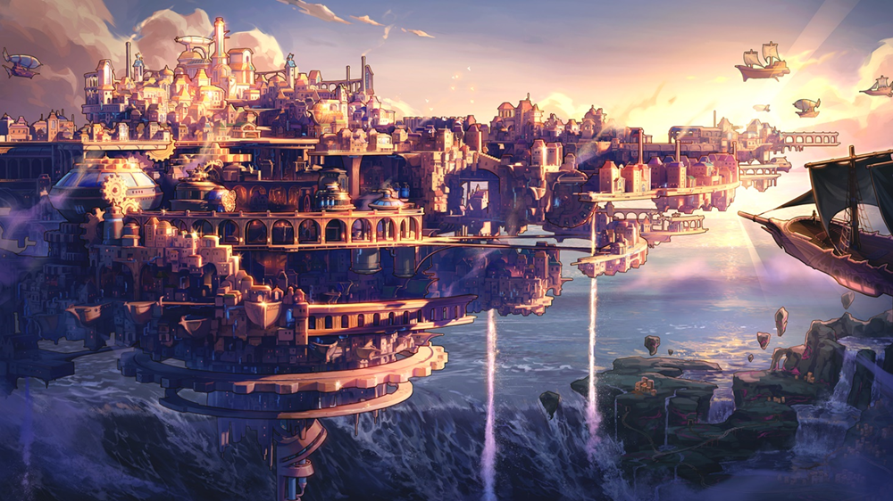

地下城与勇士 · 创新世纪重返阿拉德
01 / 02
重返阿拉德
以指尖，再燃战意。
属于你的冒险，现在随身开启。
PICK YOUR NEXT ADVENTURE
3 款云端体验为你推荐
没有找到匹配的体验。试试搜索“DNF”或“Steam”。

属于你的冒险，现在随身开启。
熟悉的世界，全新的操作节奏。
商城养成少一点切换，日常刷本少一点负担，高阶团本保留每一次精准选择。按当前任务选择方案，熟悉的技能仍然在手边。
左手移动，右手滑动选技。拾取、再挑战，随手就能完成。